첫날 네 분의 귀가 → 선택적 업무 분담 → 별관·동시 치료 → 누적 방문 일정 12회. 보상 없이 기존 900/200/600 경제를 유지합니다.
검사 3405개 통과 + 실제 웹 입력·저장·영상 시나리오 확인. Android·iPhone 실기기 검증은 미완료입니다.
Android / Web 0.4.0-dev · 빌드 소스 abec208ad905ebbc90327ab3493d907db3ffb15a
구현·기획 차이·저장·실행 안내 · 검사·체크섬 원자료
18.0초 · Linux Godot · 자동 입력 · 정상 1배속
30.0초 · Linux Godot · 자동 입력 · 정상 1배속
25.0초 · Linux Godot · 자동 입력 · 정상 1배속
녹화 전 정상 운영 명령으로 체크포인트를 준비했습니다. 영상 중 배속·프레임 생략은 없습니다. 마지막 영상은 테스트 파일을 실제 SaveStore로 다시 읽습니다. 별도 26회 프로세스 실행에서 종료·재시작을 확인했습니다. 24fps는 영상 출력 형식이며 휴대폰 FPS가 아닙니다.
Linux는 좌우 47/하단 21포인트 안전 영역 모사, Chromium은 844×350 터치 에뮬레이션입니다.
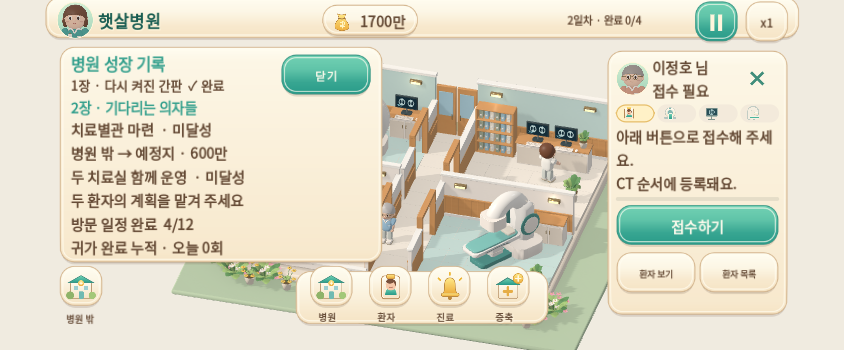
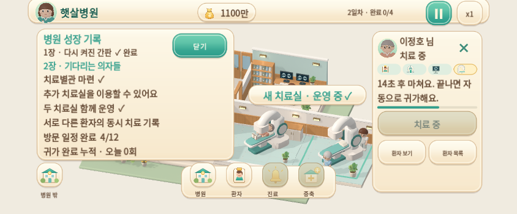
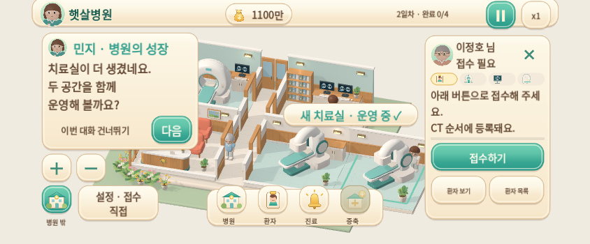
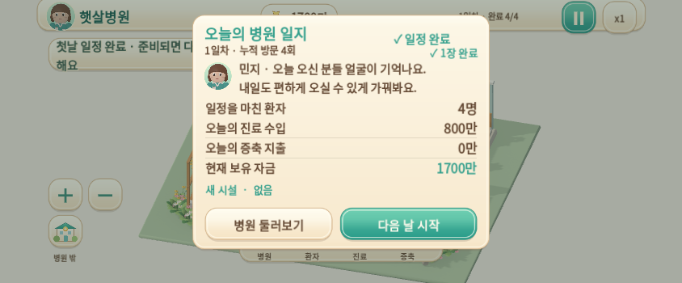
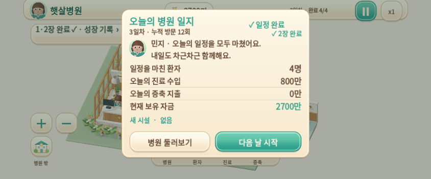
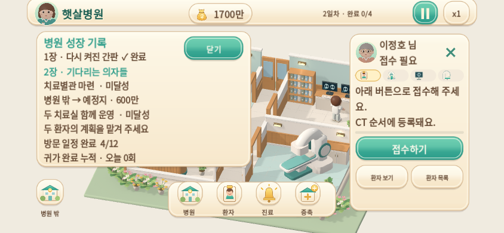
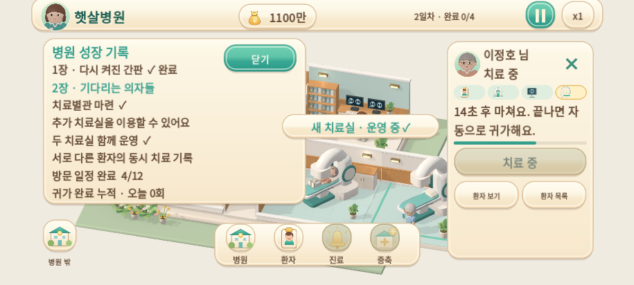
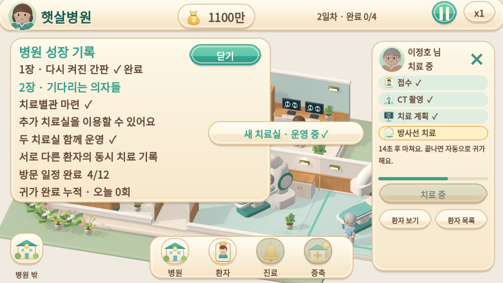
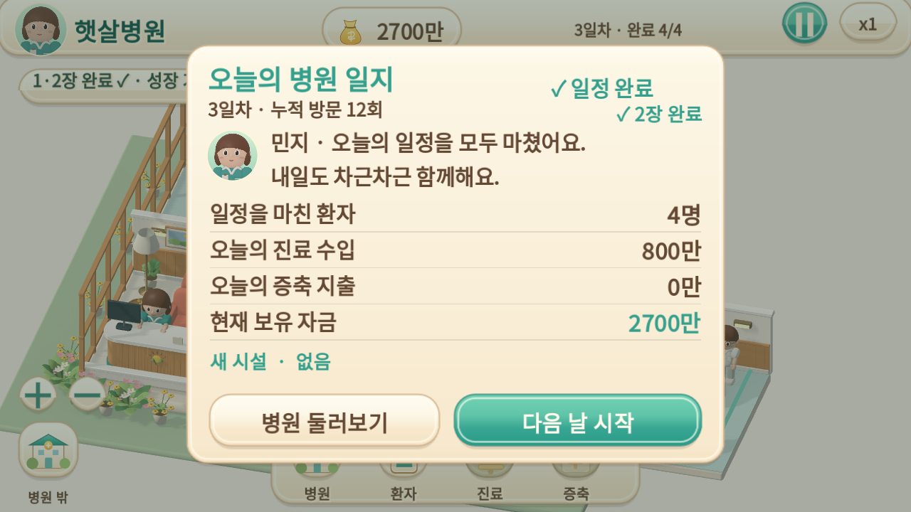
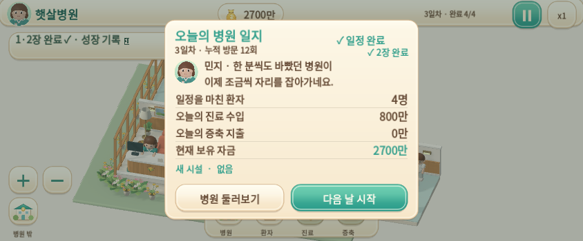
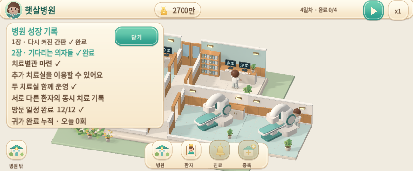